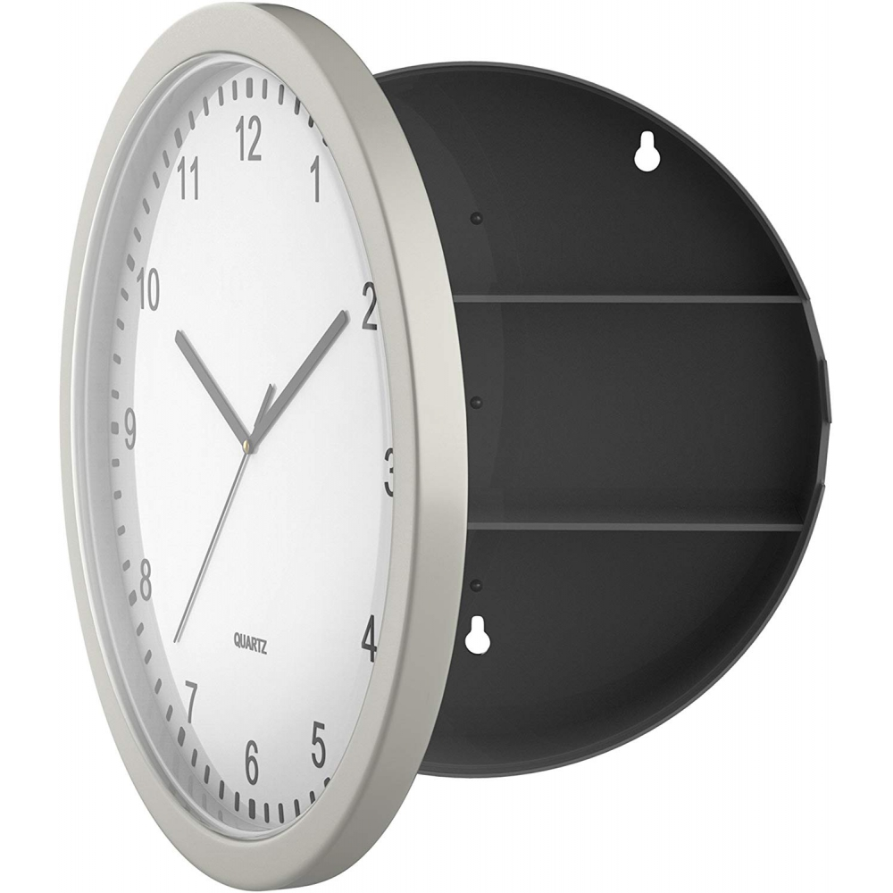
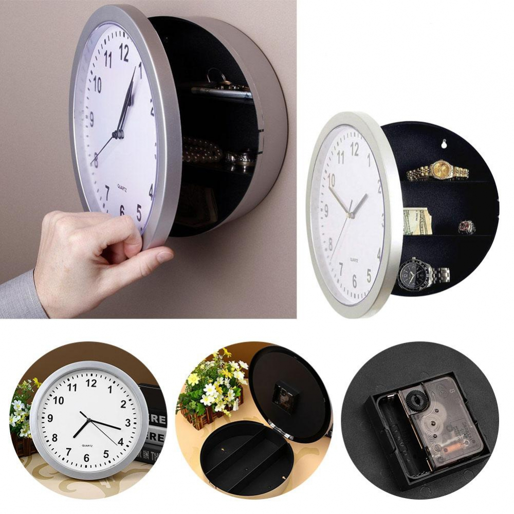

TSG – seifas ginklams | Aldasa
 20 metų patirtis Langų ir šarvuotų durų centras Skambinkite nemokamai 8-800 00833 Plastikiniai langai Langai A+, A++ PASYVIAM NAMUI Plastikiniai langai kaina Mediniai langai Balkonų stiklinimas Stumdomos sistemos Šarvuotos durys Išmaniosios spynos Ekspozicijų salonai Vidaus durys Lauko durys Sertifikatai Galerija Marmuras Seifai Frezavimas laminavimas Kontaktai Plastikiniai langai PLASTIKINIAI LANGAI KAINA LANGAI ALUPLAST IDEAL 4000 LANGAI WITAL 70, 80 AVANTGARDE 7000 LANGAI OVLO Classic LANGAI ENCORE LANGAI ALUPLAST IDEAL 8000 LANGAI DECCO 82 LANGAI VEKA 70 LANGAI VEKA 82 GOLD PROGRESS LANGAI Rehau P-Line LANGAI GEALAN S8000 LANGAI GEALAN S9000 LANGAI Kömmerling 70 5K, 76 MD, 88 7K LANGAI Passiv-Line PLUS LANGAI Passiv-Line ULTRA Lango montavimas apšiltinimo sluoksnyje Langai A+, A++ PASYVIAM NAMUI Lango montavimas apšiltinimo sluoksnyje Plastikiniai langai kaina Mediniai langai Euro IV-68 Euro IV-78 100 mm mediniai langai ir durys Lango montavimas apšiltinimo sluoksnyje Balkonų stiklinimas Plastikiniai balkonai Aliuminio balkonai Balkonų stiklinimas kaina Plastikiniai balkonai kaina Aliuminio balkonai kaina Stumdomos sistemos Stumdoma sistema HST-4000 Atlenkiama-nustumiama sistema PSK Šarvuotos durys Šarvuotos 4-os saugumo klasės durys Šarvuotos 6-os saugumo klasės durys Šarvuotos buto durys Šarvuotos lauko durys Laiptinės ir sandėliuko durys Šarvuotos durys kaina Šarvo durys kaina Išmaniosios spynos Ekspozicijų salonai Meistrų g. 16, Vilnius Šnipiškių g. 2, Vilnius Vytauto pr. 45, Kaunas Vilniaus g. 8, Panevėžys Basanavičiaus g. 55, Utena Vidaus durys Laminuotos durys Ekofaneruotės durys Medžio masyvo durys Faneruotos durys Dažytos durys Vidaus durys kaina Lauko durys Šiltos medinės lauko durys Sertifikatai Galerija Šarvuotos durys Mediniai langai Plastikiniai langai Balkonų stiklinimas Lauko durys Vidaus durys Stumdomos sistemos Marmuras Marmuro plytelės kaina Seifai BST baldiniai seifai FBP atsparūs įsilaužimui seifai TSG seifas ginklams SG seifas ginklams VALBERG seifai PARITET laisvai pastatomi seifai PARITET sieniniai seifai SAU šarvuoti seifai SB – šarvuoti 0 klasės seifai SB šarvuoti 1 klasės seifai Seifas / stalčius ginklams Seifas raktams Frezavimas laminavimas Kontaktai Vilnius, Šnipiškių g. 2 Vilnius, Meistrų g. 16 Kaunas, Vytauto pr. 45 Panevėžys, Vilniaus g. 8 Utena, J. Basanavičiaus g. 55
Seifai
TSG seifas ginklams.
Seife įmontuota 8 plokštelių seifinė spyna
Pasibaigus karantinui sutarčių sudarymui ir matavimui-konsultavimui atvykstame į Kliento nurodytą vietą. Mūsų darbuotojai naudoja visas rekomenduojamas apsaugos priemones.
Kontaktai
TSG SERTIFIKUOTAS SEIFAS GINKLAMS
Seifas tvirtinamas prie grindų keturių ankerių pagalba.
Korpusas ir durys suvirinti iš 3 mm storio plieno lakštų.
Priekinis rėmelis suformuotas taip, kad “dėžutės” pavidalo durų briaunos įeitų į vidų, sudarydamos ypač standų sukabinimą.Ypatingai didelį atsparumą suteikia sustandinimo briaunos iš vidinės lubų pusės.
Seifų durys užrakinamos 6 vnt. Æ 18 mm 3 kryptimis judančiais skląsčiais, o iš lankstų pusės durys per visą aukštį fiksuojamos nejudantčia specialia plokšte. Todėl seifo neįmanoma atidaryti ir nupjovus lankstus.
Mechanizmas lengvai valdomas šturvalu. Bandant numušti spyną mechanizmas užblokuojamas. Dėl visų šių privalumų gaminys gavo gerą įvertinimą Norvegijoje.
Skląsčiai ir rankenėlės padengtos vario-nikelio-chromo danga. Seifo paviršius dengiamas aukštos kokybės milteliniais dažais, spalva RAL 7035 .
Seifuose įmontuota 8 plokštelių seifinė spyna.
Gamintojas suteikia 12 mėnesių garantiją. Sugedus seifui ne dėl kliento kaltės gamintojas pašalina gedimus.
Elektroninė kodinė spyna + 185 EUR
Parašykite ir sužinokite kainą:
Žiūrėti galeriją
Mūsų salonai
Vilnius
Šnipiškių g. 2
Vilnius
Meistrų g. 16
Kaunas
Vytauto pr. 45
Panevėžys
Vilniaus g. 8
Utena
J. Basanavičiaus g. 55
20 metų patirtis, virš 30 darbuotojų, nuosavos gamybos patalpos, įranga ir transportas leidžia mums pasiūlyti gerą kainos ir kokybės santykį atitinkančius langus, duris ir kitus produktus.
Langai Durys Balkonų stiklinimas Kitos prekės ir paslaugosPlastikiniai langai
Plastikiniai langai A+, A++
Mediniai langai
Langai sandėlyje pigiau
Šarvuotos durys
Šiltos medinės lauko durys
Laiptinės ir sandėliuko durys
Vidaus durys
Išmaniosios spynos
Plastikiniai balkonai
Aliuminio balkonai
Stumdomos sistemos
Seifai
Marmuras
Frezavimas, laminavimas
Mūsų salonai:
VILNIUS | Meistrų g. 16 VILNIUS | Šnipiškių g. 2 KAUNAS | Vytauto pr. 45
PANEVĖŽYS | Vilniaus g. 8 UTENA | J. Basanavičiaus g. 55
Plastikiniai langai Langai A+, A++ PASYVIAM NAMUI Plastikiniai langai kaina Mediniai langai Balkonų stiklinimas Stumdomos sistemos Šarvuotos durys Išmaniosios spynos Ekspozicijų salonai Vidaus durys Lauko durys Sertifikatai Galerija Marmuras Seifai Frezavimas laminavimas Kontaktai 20 metų patirtis! Uždaroji akcinė bendrovė "Aldasa" specializuojasi plastikinių ir klijuotos medienos langų bei šarvuotų durų projektavime, gamyboje. Atliekame įvairius montavimo, apdailos darbus. Mes siūlome aukštos kokybės sertifikuotus produktus ir paslaugas.Būdami patys gamintojai galime garantuoti kokybišką ir operatyvų garantinį aptarnavimą. +370 5 273 2040 Šnipiškių g. 2 Nemokama infolinija 8-800 00833 LT-09309, Vilnius info@aldasa.lt Lietuva Visos teisės saugomos © 2020 | UAB "ALDASA" | Kopijuoti turinį griežtai draudžiama! Mus galite rasti: